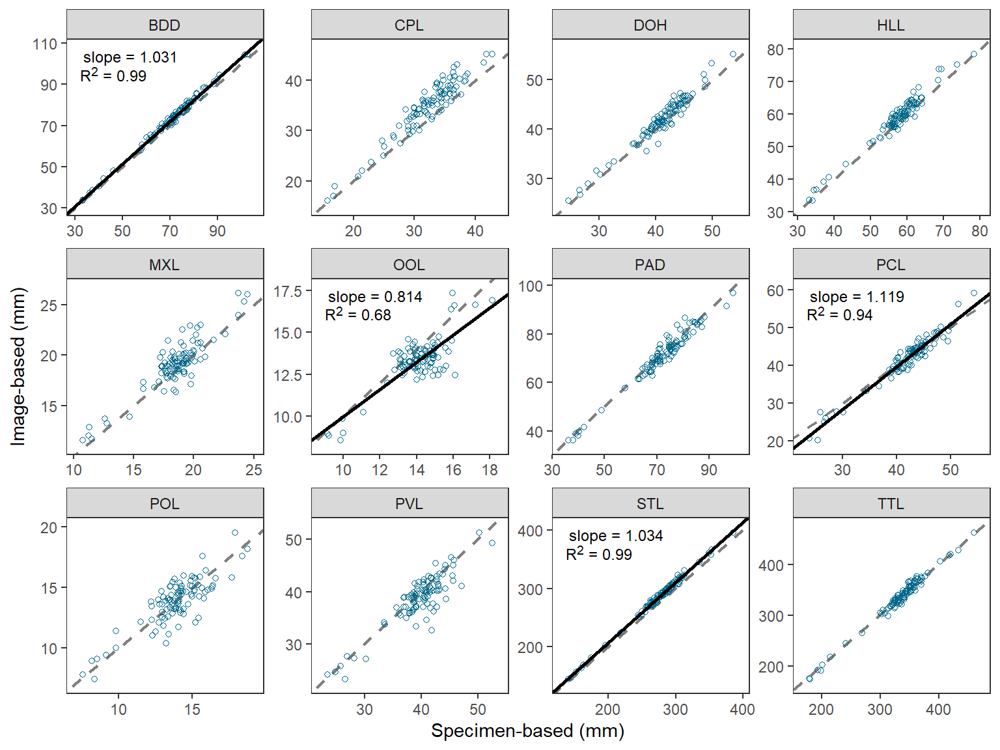
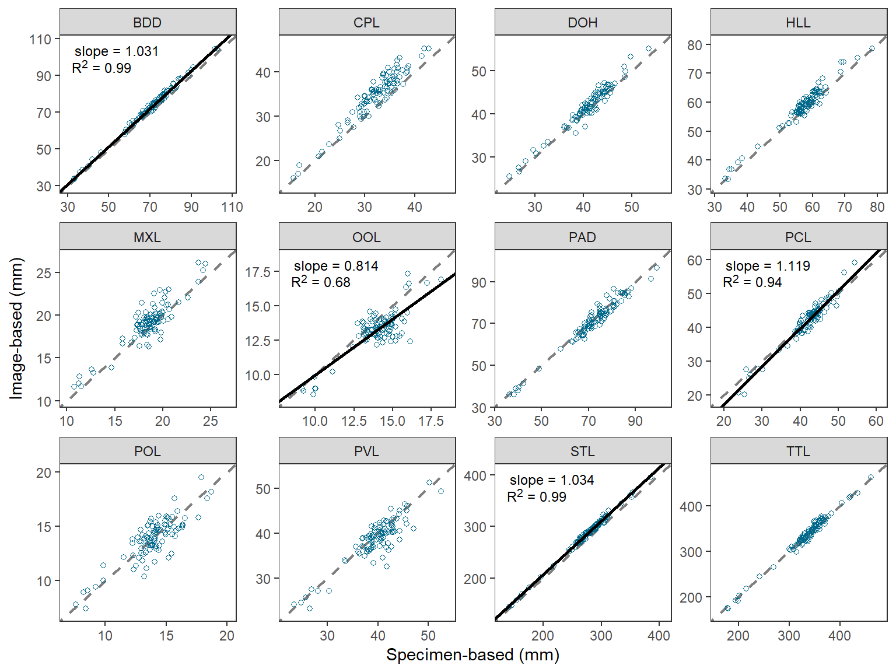
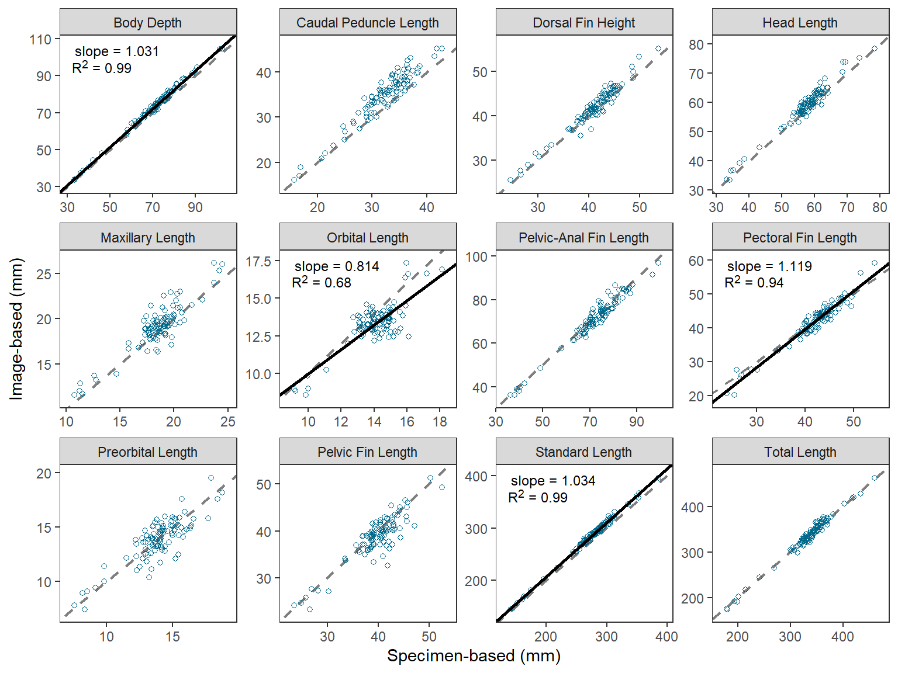

library(tidyverse) # for dplyr, ggplot2 packagesIntroduction
O’Malley et al. (2021) compared morphometric measurements made directly on Cisco (Coregonus artedi) to those made from digitized images. Their Figure 2 displayed the relationship between the two measurements for 12 morphometric measures. They tested whether the slope of the relationship between two measurements was equal to 1 for all 12 measures, but only showed the regression result on the plot if the slope was significantly different from 1. I use ggplot2 here to recreate their figure.
The following packages are loaded for use below. A few functions from each of FSA, tibble, scales, ggtext, and smatr are used with :: such that the entire packages are not attached here.
Data Wrangling
Individual Measures
O’Malley et al. (2021) provided the raw data for producing Figure 1 in their Archived Material A1, which I loaded below. I retained only the variables needed for this post and renamed them to be shorter.
dat <- read.csv("CiscoMethodMSDataset_20200929.csv") |>
select(id=SpecimenID,measure=MorphometricAbbreviation,method=Method,
measurer=MeasurerInitials,value=Value)
FSA::headtail(dat)#R| id measure method measurer value
#R| 1 2018-50-886-20 BDD specimenBased BPO 66.88000
#R| 2 2018-50-886-20 CPL specimenBased BPO 26.59000
#R| 3 2018-50-886-20 DOH specimenBased BPO 42.61000
#R| 3562 2018-38-208-6 PVL imageBased JDS 40.41272
#R| 3563 2018-38-208-6 STL imageBased JDS 275.50429
#R| 3564 2018-38-208-6 TTL imageBased JDS 328.48593The image-based measurements were made by two measurers. Figure 2 uses only those measurements made by the same measurer as for the specimen-based measurements (i.e., “BPO”).
dat2 <- dat |>
filter(measurer=="BPO")
FSA::headtail(dat2)#R| id measure method measurer value
#R| 1 2018-50-886-20 BDD specimenBased BPO 66.88000
#R| 2 2018-50-886-20 CPL specimenBased BPO 26.59000
#R| 3 2018-50-886-20 DOH specimenBased BPO 42.61000
#R| 2374 2018-38-208-6 PVL imageBased BPO 38.73081
#R| 2375 2018-38-208-6 STL imageBased BPO 276.25851
#R| 2376 2018-38-208-6 TTL imageBased BPO 329.04718These data need to be made “wider” by placing the two methods of measurement into their own columns, rather than in different rows.
dat2 <- dat2 |>
pivot_wider(names_from=method,values_from=value)
FSA::headtail(dat2)#R| id measure measurer specimenBased imageBased
#R| 1 2018-50-886-20 BDD BPO 66.88 69.05096
#R| 2 2018-50-886-20 CPL BPO 26.59 28.61097
#R| 3 2018-50-886-20 DOH BPO 42.61 44.97137
#R| 1186 2018-38-208-6 PVL BPO 38.64 38.73081
#R| 1187 2018-38-208-6 STL BPO 267.00 276.25851
#R| 1188 2018-38-208-6 TTL BPO 325.00 329.04718These data are now ready for plotting imageBased versus specimenBased for each measure.
Regression Summaries
Figure 2, however, also shows summary results from the linear regression of imageBased on specimenBased for each measure for which the slope was significantly different from 1. Thus, these regressions must be conducted for each measure and the results stored in a data frame for use when plotting. There are a variety of ways to do this, but sapply() is used below.1
1 lmList() from nlme is another option, though manipulation of results afterwards is still required to produce the needed data frame.
The original data frame is split on measure to form a list with a data frame for each measure. The result is too big to show here.
dat2.split <- split(dat2,dat2$measure)A function is then defined that will take a data frame as its sole argument, fit the regression of imageBased on specimenBased, extract certain results about the regression and combine them into a vector, and then return that vector.2 This function is created below and called regfun().
2 To see how this works, run the tmp line below but with data=dat2 instead and then use str(tmp) to see what is stored from this result and then extracted in the following lines.
regfun <- function(d) {
tmp <- summary(lm(imageBased~specimenBased,data=d))
c(slope=tmp$coefficients["specimenBased","Estimate"],
slopeSE=tmp$coefficients["specimenBased","Std. Error"],
intercept=tmp$coefficients["(Intercept)","Estimate"],
rsq=tmp$r.squared,
df=tmp$df[2])
}As an example, regfun is called below with only the data for the “BDD” morphometric measurement in dat2.split. Here you can see that regfun() returns the estimated intercept and slope, the standard error for the slope, the r-squared value, and the residual degrees-of-freedom for the regression.
regfun(dat2.split$BDD)#R| slope slopeSE intercept rsq df
#R| 1.031474479 0.008749461 0.010705827 0.993068986 97.000000000regfun() can be applied to each item in dat2.split with sapply().
sapply(dat2.split,FUN=regfun)#R| BDD CPL DOH HLL MXL
#R| slope 1.031474479 1.0757713 1.02856998 1.01445030 0.96781162
#R| slopeSE 0.008749461 0.0352823 0.02442481 0.02186351 0.04933639
#R| intercept 0.010705827 0.1554068 -0.44887045 0.44980926 1.16453067
#R| rsq 0.993068986 0.9055193 0.94813927 0.95688676 0.79867605
#R| df 97.000000000 97.0000000 97.00000000 97.00000000 97.00000000
#R| OOL PAD PCL POL PVL
#R| slope 0.81350663 0.98313163 1.11895119 0.86621728 0.90627210
#R| slopeSE 0.05721728 0.02070146 0.02995096 0.05628229 0.04636973
#R| intercept 1.82831841 0.18526295 -5.15899945 1.78522043 2.71996110
#R| rsq 0.67574491 0.95876533 0.93501829 0.70946778 0.79748909
#R| df 97.00000000 97.00000000 97.00000000 97.00000000 97.00000000
#R| STL TTL
#R| slope 1.033775553 1.02287457
#R| slopeSE 0.008315711 0.01384976
#R| intercept 0.017022154 -7.17195762
#R| rsq 0.993762642 0.98252745
#R| df 97.000000000 97.00000000However, the result needs to be transposed with t() so that the summary statistics form the columns and the measures form the rows. The transposed matrix is converted to a data frame for further manipulation.
rsum <- sapply(dat2.split,FUN=regfun) |>
t() |>
as.data.frame()
rsum#R| slope slopeSE intercept rsq df
#R| BDD 1.0314745 0.008749461 0.01070583 0.9930690 97
#R| CPL 1.0757713 0.035282303 0.15540677 0.9055193 97
#R| DOH 1.0285700 0.024424812 -0.44887045 0.9481393 97
#R| HLL 1.0144503 0.021863514 0.44980926 0.9568868 97
#R| MXL 0.9678116 0.049336389 1.16453067 0.7986760 97
#R| OOL 0.8135066 0.057217285 1.82831841 0.6757449 97
#R| PAD 0.9831316 0.020701457 0.18526295 0.9587653 97
#R| PCL 1.1189512 0.029950963 -5.15899945 0.9350183 97
#R| POL 0.8662173 0.056282293 1.78522043 0.7094678 97
#R| PVL 0.9062721 0.046369732 2.71996110 0.7974891 97
#R| STL 1.0337756 0.008315711 0.01702215 0.9937626 97
#R| TTL 1.0228746 0.013849764 -7.17195762 0.9825274 97This data frame is modified by converting the rownames to a variable name (i.e., measure) with rownames_to_column() from tibble. In addition, a t test statistic for the comparison of the estimated slope to 1 is computed and a two-tailed p-value is computed from that test statistic using pt().
rsum <- rsum |>
tibble::rownames_to_column(var="measure") |>
mutate(t=(slope-1)/slopeSE,
p=2*pt(abs(t),df=df,lower.tail=FALSE))
rsum#R| measure slope slopeSE intercept rsq df t
#R| 1 BDD 1.0314745 0.008749461 0.01070583 0.9930690 97 3.5973049
#R| 2 CPL 1.0757713 0.035282303 0.15540677 0.9055193 97 2.1475736
#R| 3 DOH 1.0285700 0.024424812 -0.44887045 0.9481393 97 1.1697113
#R| 4 HLL 1.0144503 0.021863514 0.44980926 0.9568868 97 0.6609323
#R| 5 MXL 0.9678116 0.049336389 1.16453067 0.7986760 97 -0.6524268
#R| 6 OOL 0.8135066 0.057217285 1.82831841 0.6757449 97 -3.2593886
#R| 7 PAD 0.9831316 0.020701457 0.18526295 0.9587653 97 -0.8148399
#R| 8 PCL 1.1189512 0.029950963 -5.15899945 0.9350183 97 3.9715313
#R| 9 POL 0.8662173 0.056282293 1.78522043 0.7094678 97 -2.3769948
#R| 10 PVL 0.9062721 0.046369732 2.71996110 0.7974891 97 -2.0213164
#R| 11 STL 1.0337756 0.008315711 0.01702215 0.9937626 97 4.0616555
#R| 12 TTL 1.0228746 0.013849764 -7.17195762 0.9825274 97 1.6516215
#R| p
#R| 1 5.081712e-04
#R| 2 3.423944e-02
#R| 3 2.449833e-01
#R| 4 5.102225e-01
#R| 5 5.156691e-01
#R| 6 1.540325e-03
#R| 7 4.171601e-01
#R| 8 1.371816e-04
#R| 9 1.941692e-02
#R| 10 4.600229e-02
#R| 11 9.887411e-05
#R| 12 1.018456e-01The authors determined the significance of the regression with a Bonferroni correction, which they implemented by comparing the calculated p-value to 0.05/12, where 0.05 is the overall rejection criterion value and 12 is the number of p-values calculated. An alternative to this is to multiply the calculated p-values by 12 and then compare those adjusted p-values to 0.05 to determine significance. Either method produces the same result, but the second method, when implemented with p.adjust() provides flexibility to try methods other than Bonferroni (see Further Comments below).3
3 Bonferroni-corrected p-values greater than 1 are displayed as 1.
rsum <- rsum |>
mutate(p.bonf=p.adjust(p,method="bonferroni"))
rsum#R| measure slope slopeSE intercept rsq df t
#R| 1 BDD 1.0314745 0.008749461 0.01070583 0.9930690 97 3.5973049
#R| 2 CPL 1.0757713 0.035282303 0.15540677 0.9055193 97 2.1475736
#R| 3 DOH 1.0285700 0.024424812 -0.44887045 0.9481393 97 1.1697113
#R| 4 HLL 1.0144503 0.021863514 0.44980926 0.9568868 97 0.6609323
#R| 5 MXL 0.9678116 0.049336389 1.16453067 0.7986760 97 -0.6524268
#R| 6 OOL 0.8135066 0.057217285 1.82831841 0.6757449 97 -3.2593886
#R| 7 PAD 0.9831316 0.020701457 0.18526295 0.9587653 97 -0.8148399
#R| 8 PCL 1.1189512 0.029950963 -5.15899945 0.9350183 97 3.9715313
#R| 9 POL 0.8662173 0.056282293 1.78522043 0.7094678 97 -2.3769948
#R| 10 PVL 0.9062721 0.046369732 2.71996110 0.7974891 97 -2.0213164
#R| 11 STL 1.0337756 0.008315711 0.01702215 0.9937626 97 4.0616555
#R| 12 TTL 1.0228746 0.013849764 -7.17195762 0.9825274 97 1.6516215
#R| p p.bonf
#R| 1 5.081712e-04 0.006098055
#R| 2 3.423944e-02 0.410873238
#R| 3 2.449833e-01 1.000000000
#R| 4 5.102225e-01 1.000000000
#R| 5 5.156691e-01 1.000000000
#R| 6 1.540325e-03 0.018483900
#R| 7 4.171601e-01 1.000000000
#R| 8 1.371816e-04 0.001646179
#R| 9 1.941692e-02 0.233002989
#R| 10 4.600229e-02 0.552027438
#R| 11 9.887411e-05 0.001186489
#R| 12 1.018456e-01 1.000000000The authors used slope.test() from smatr to compute the p-value for the comparison of the estimated slope to 1. The code below uses sapply() to compute these p-values for each group. A comparison of the p column below to the one above shows that the results above are the same as those from smatr.
sth <- function(d) with(d,smatr::slope.test(imageBased,specimenBased,
test.value=1,method="OLS"))$p
sapply(dat2.split,FUN=sth) |>
as.data.frame() |>
rename(p=1)#R| p
#R| BDD 5.081712e-04
#R| CPL 3.423944e-02
#R| DOH 2.449833e-01
#R| HLL 5.102225e-01
#R| MXL 5.156691e-01
#R| OOL 1.540325e-03
#R| PAD 4.171601e-01
#R| PCL 1.371816e-04
#R| POL 1.941692e-02
#R| PVL 4.600229e-02
#R| STL 9.887411e-05
#R| TTL 1.018456e-01Figure 2 in O’Malley et al. (2021) showed the regression line, its slope, and the corresponding r2 value only for those measures for which the slope was significantly different from 1. To facilitate this, three new variables are created that contain the slope, the intercept, and the regression label only for those measures with slopes that differed significantly from 1.4 Use of HTML and markdown code in the label was described in this post.
4 I also remove three variables that are not needed further.
rsum <- rsum |>
mutate(b=ifelse(p.bonf<0.05,intercept,NA),
m=ifelse(p.bonf<0.05,slope,NA),
lbl=ifelse(p.bonf<0.05,paste0("slope = ",round(slope,3),
"<br>R^2^ = ",round(rsq,2)),
NA)) |>
select(-slopeSE,-df,-t)
rsum#R| measure slope intercept rsq p p.bonf b
#R| 1 BDD 1.0314745 0.01070583 0.9930690 5.081712e-04 0.006098055 0.01070583
#R| 2 CPL 1.0757713 0.15540677 0.9055193 3.423944e-02 0.410873238 NA
#R| 3 DOH 1.0285700 -0.44887045 0.9481393 2.449833e-01 1.000000000 NA
#R| 4 HLL 1.0144503 0.44980926 0.9568868 5.102225e-01 1.000000000 NA
#R| 5 MXL 0.9678116 1.16453067 0.7986760 5.156691e-01 1.000000000 NA
#R| 6 OOL 0.8135066 1.82831841 0.6757449 1.540325e-03 0.018483900 1.82831841
#R| 7 PAD 0.9831316 0.18526295 0.9587653 4.171601e-01 1.000000000 NA
#R| 8 PCL 1.1189512 -5.15899945 0.9350183 1.371816e-04 0.001646179 -5.15899945
#R| 9 POL 0.8662173 1.78522043 0.7094678 1.941692e-02 0.233002989 NA
#R| 10 PVL 0.9062721 2.71996110 0.7974891 4.600229e-02 0.552027438 NA
#R| 11 STL 1.0337756 0.01702215 0.9937626 9.887411e-05 0.001186489 0.01702215
#R| 12 TTL 1.0228746 -7.17195762 0.9825274 1.018456e-01 1.000000000 NA
#R| m lbl
#R| 1 1.0314745 slope = 1.031<br>R^2^ = 0.99
#R| 2 NA <NA>
#R| 3 NA <NA>
#R| 4 NA <NA>
#R| 5 NA <NA>
#R| 6 0.8135066 slope = 0.814<br>R^2^ = 0.68
#R| 7 NA <NA>
#R| 8 1.1189512 slope = 1.119<br>R^2^ = 0.94
#R| 9 NA <NA>
#R| 10 NA <NA>
#R| 11 1.0337756 slope = 1.034<br>R^2^ = 0.99
#R| 12 NA <NA>Below, b and m will be used to show regressions lines on each facet, but for measures where these are NA no line will be shown. This same idea will be true for adding the results labels; i.e., measures where lbl is NA will not show a label. Thus, the regression line and results will only be shown in facets for measures with slopes significantly different from 1.
Recreating Figure 1
Once the data are arranged as above, making Figure 1 is a fairly straight-forward application of techniques used in previous posts. I highlight the steps below.
- Use
geom_abline()to make the 1:1 line (i.e., slope of 1, intercept of 0). This is first so that it sits behind the data and potential regression lines. - Use
geom_point()withdat2to add points for each observedspecimenBasedandimageBasedpair.shape=1uses an “open circle” for the point.deepskyblue4was my best guess at thecolor=that O’Malley et al. (2021) used. - Use
geom_abline()withrsumandbmapped tointercept=andmmapped toslope. Do not useinterceptandslopehere as that will show the regression line on each facet. - Use
geom_richtext()fromggtextusingrsumwithlblmapped tolabel=to place the regression result labels in the upper-right corner.geom_richtext()is used here rather thangeom_text()because thelblhad HTML and markdown code in them. - Label the x- and y-axes and expand their limits a little more.
- Create three rows of facets based on
measurewithfacet_wrap().scales="free"is used so that each facet has its own x- and y-axis tick mark labels. - Apply the
theme_bw()theme and remove the default grid lines.
ggplot() +
geom_abline(slope=1,intercept=0,linetype="dashed",linewidth=0.75,color="gray50") +
geom_point(data=dat2,mapping=aes(x=specimenBased,y=imageBased),
shape=1,color="deepskyblue4") +
geom_abline(data=rsum,mapping=aes(intercept=b,slope=m),
color="black",linewidth=1) +
ggtext::geom_richtext(data=rsum,mapping=aes(label=lbl),
x=-Inf,y=Inf,vjust=1.1,hjust=-0.1,
size=9/.pt,label.color=NA) +
scale_x_continuous(name="Specimen-based (mm)",expand=expansion(mult=0.1)) +
scale_y_continuous(name="Image-based (mm)",expand=expansion(mult=0.1)) +
facet_wrap(vars(measure),nrow=3,scales="free") +
theme_bw() +
theme(panel.grid=element_blank())
Further Thoughts
Same Axes in Each Facet
The last part of Figure 2 in O’Malley et al. (2021) that I could not recreate simply was to ensure that the x- and y-axes were the same (same limits and breaks) in each facet. An especially egregious example of my failure here is for the “OOL” facet.
This StackOverflow answer provided a method for making the x- and y-axes the same within each facet, but also the same across the facets. A simple modification of that answer results in the x- and y-axes being the same within each facet, but different across facets.
There are two “tricks” in this process. The first is to create a data fame that finds the minimum and maximum value of imageBased and specimenBased combined for each measure, then place those values in a single variable that is matched against the measure name, and then repeat that column in a second variable.
fctlims <- dat2 |>
group_by(measure) |>
summarize(min=min(imageBased,specimenBased),
max=max(imageBased,specimenBased)) |>
pivot_longer(cols=min:max,values_to="x") |>
mutate(y=x) |>
select(-name)
FSA::headtail(fctlims)#R| measure x y
#R| 1 BDD 33.1800 33.1800
#R| 2 BDD 104.7049 104.7049
#R| 3 CPL 15.6600 15.6600
#R| 22 STL 395.8014 395.8014
#R| 23 TTL 173.8007 173.8007
#R| 24 TTL 463.2827 463.2827These “data” are then added to the plot from above using geom_blank() where x= and y= are mapped to the two columns of “min” and “max” values. This then sets the range of data to be presented on the x- and y-axes, and because the two columns are the same then the axes will appear the same. geom_blank() does not plot any actual data so this effectively just sets the x- and y-axis limits and breaks.
ggplot() +
geom_blank(data=fctlims,mapping=aes(x=x,y=y)) +
geom_abline(slope=1,intercept=0,linetype="dashed",linewidth=0.75,color="gray50") +
geom_point(data=dat2,mapping=aes(x=specimenBased,y=imageBased),
shape=1,color="deepskyblue4") +
geom_abline(data=rsum,mapping=aes(intercept=b,slope=m),
color="black",linewidth=1) +
ggtext::geom_richtext(data=rsum,mapping=aes(label=lbl),
x=-Inf,y=Inf,vjust=1.1,hjust=-0.1,
size=9/.pt,label.color=NA) +
scale_x_continuous(name="Specimen-based (mm)",expand=expansion(mult=0.1)) +
scale_y_continuous(name="Image-based (mm)",expand=expansion(mult=0.1)) +
facet_wrap(vars(measure),nrow=3,scales="free") +
theme_bw() +
theme(panel.grid=element_blank())
This is pretty nice, but I still could not get the exact breaks in O’Malley et al. (2021). I started to try facetted_pos_scales() from ggh4x but lost my patience with it.
Alternative Multiple Comparison Procedures
The Bonferroni-correction for multiple comparisons is a “brute-force” method that becomes “too conservative” (i.e., overall error rate less than 0.05), especially as the number of comparisons increases. This, ultimately results in a loss of statistical power (i.e., potentially detecting fewer truly significant results). The Bonferroni method is often employed because it is simple to implement as shown above – you either divide or multiply by the number of tests. However, p.adjust() provides the ability to use a wider variety of other methods that are less conservative than the Bonferroni.5 Below, the Holm method is demonstrated.
5 See ?p.adjust for more explanation of these methods.
p.adjust.methods#R| [1] "holm" "hochberg" "hommel" "bonferroni" "BH"
#R| [6] "BY" "fdr" "none"rsum |>
mutate(p.holm=p.adjust(p,method="holm")) |>
select(measure,p,p.bonf,p.holm)#R| measure p p.bonf p.holm
#R| 1 BDD 5.081712e-04 0.006098055 0.005081712
#R| 2 CPL 3.423944e-02 0.410873238 0.239676055
#R| 3 DOH 2.449833e-01 1.000000000 0.979933278
#R| 4 HLL 5.102225e-01 1.000000000 1.000000000
#R| 5 MXL 5.156691e-01 1.000000000 1.000000000
#R| 6 OOL 1.540325e-03 0.018483900 0.013862925
#R| 7 PAD 4.171601e-01 1.000000000 1.000000000
#R| 8 PCL 1.371816e-04 0.001646179 0.001508997
#R| 9 POL 1.941692e-02 0.233002989 0.155335326
#R| 10 PVL 4.600229e-02 0.552027438 0.276013719
#R| 11 STL 9.887411e-05 0.001186489 0.001186489
#R| 12 TTL 1.018456e-01 1.000000000 0.509227920In this situation the Bonferroni and Holm methods did not provide different conclusions, so I did not recreate the b, m, and lbl variables. However, alternative correction methods may provide different conclusions in other situations.
Descriptive Facet Labels
I believe that O’Malley et al. (2021) used the measure abbreviations in their Figure 2 to tie the results to their Figure 1, which showed the measures on a schematic fish. However, there may be situations where more descriptive facet labels may be useful. For example, below a named vector is created where the name (before the =) is the measure abbreviation used in measure and the “value” (after the =) is a more descriptive name for the measure.
longnames <- c("BDD"="Body Depth",
"CPL"="Caudal Peduncle Length",
"DOH"="Dorsal Fin Height",
"HLL"="Head Length",
"MXL"="Maxillary Length",
"OOL"="Orbital Length",
"PAD"="Pelvic-Anal Fin Length",
"PCL"="Pectoral Fin Length",
"POL"="Preorbital Length",
"PVL"="Pelvic Fin Length",
"STL"="Standard Length",
"TTL"="Total Length")The abbreviations in the facet strip can be replaced with the longer names by setting labeller= in facet_wrap() to labeller() which has the variable name that creates the facets (i.e., measure here) set equal to the named vector just created.
ggplot() +
geom_abline(slope=1,intercept=0,linetype="dashed",linewidth=0.75,color="gray50") +
geom_point(data=dat2,mapping=aes(x=specimenBased,y=imageBased),
shape=1,color="deepskyblue4") +
geom_abline(data=rsum,mapping=aes(intercept=b,slope=m),
color="black",linewidth=1) +
ggtext::geom_richtext(data=rsum,mapping=aes(label=lbl),
x=-Inf,y=Inf,vjust=1.1,hjust=-0.1,
size=9/.pt,label.color=NA) +
scale_x_continuous(name="Specimen-based (mm)",expand=expansion(mult=0.1)) +
scale_y_continuous(name="Image-based (mm)",expand=expansion(mult=0.1)) +
facet_wrap(vars(measure),nrow=3,scales="free",
labeller=labeller(measure=longnames)) +
theme_bw() +
theme(panel.grid=element_blank())
References
O’Malley, B. P., J. D. Schmitt, J. P. Holden, and B. C. Weidel. 2021. Comparison of specimen- and image-based morphometrics for Cisco. Journal of Fish and Wildlife Management 12(1):208–215.
Reuse
Citation
BibTeX citation:
@online{h.ogle2023,
author = {Derek H. Ogle},
title = {O’Malley Et Al. (2021) {Regression} {Plots}},
date = {2023-04-06},
url = {https://fishr-core-team.github.io/fishR//blog/posts/2023-4-6_OMalleyetal2021_Fig2},
langid = {en}
}
For attribution, please cite this work as:
Derek H. Ogle. 2023, April 6. O’Malley et al. (2021) Regression Plots.
https://fishr-core-team.github.io/fishR//blog/posts/2023-4-6_OMalleyetal2021_Fig2.